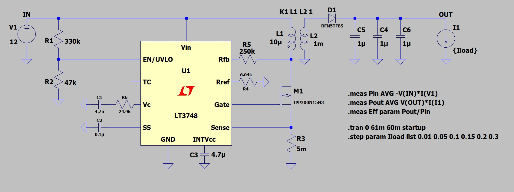
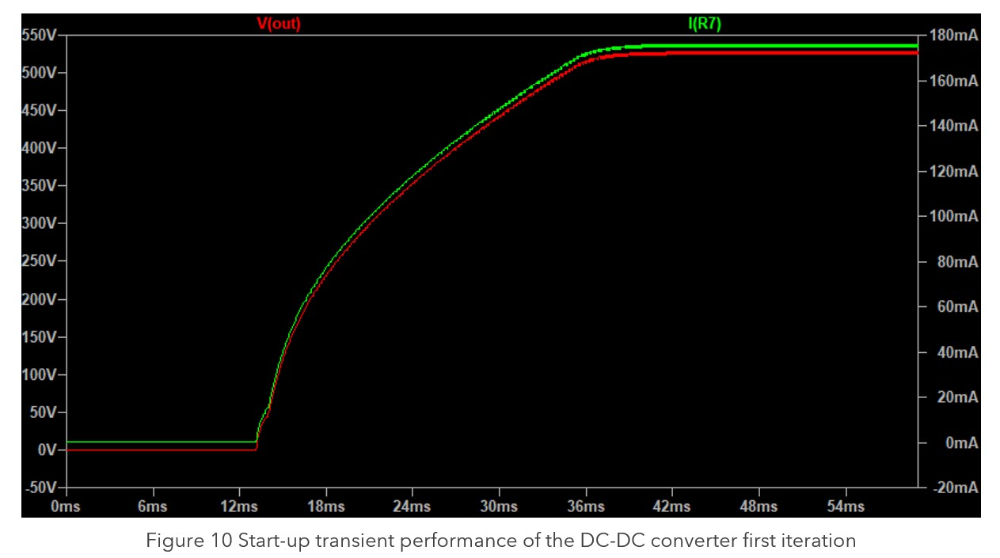
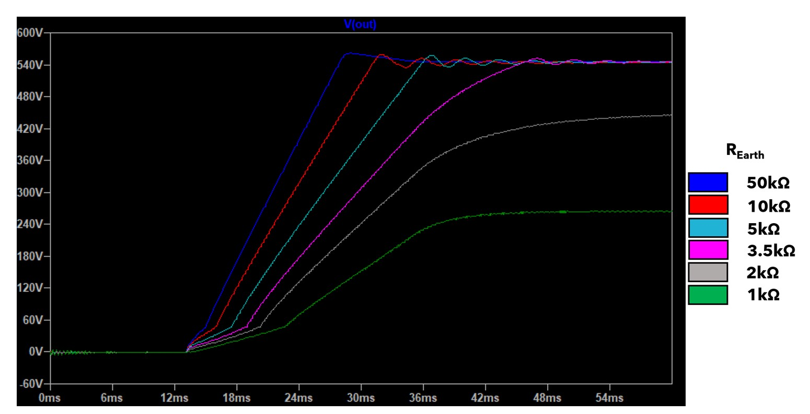
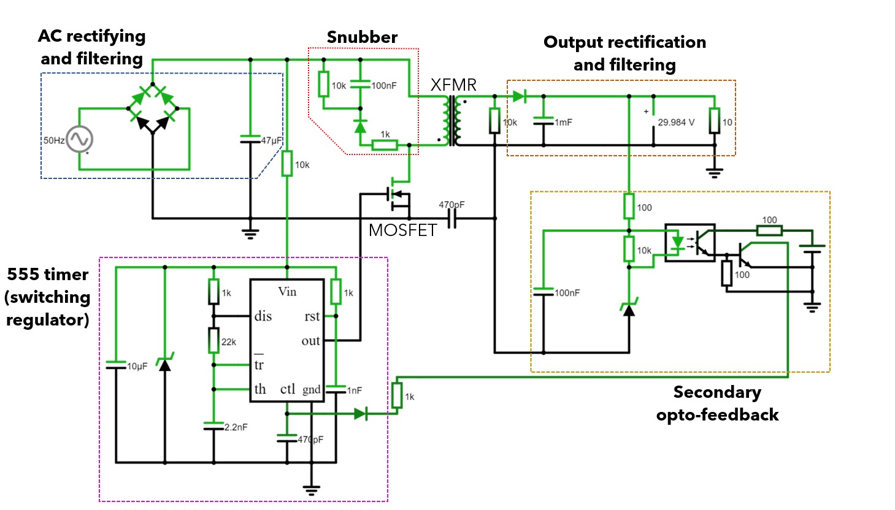
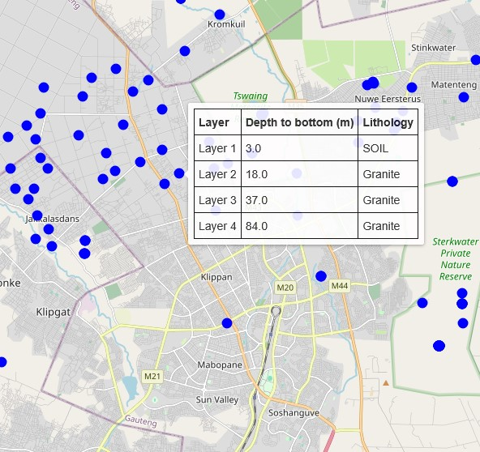

2023
Design and implementation of a power sub-system for groundwater surveying equipment used in borehole location projects in South Africa. The project involved developing efficient DC-DC conversion circuits to power sensitive measurement instruments in remote field conditions.
The system required careful consideration of power efficiency, electromagnetic interference, and environmental robustness. Circuit analysis included transient response modeling, startup behavior characterization, and thermal management for reliable operation in challenging field conditions.
Gallery




